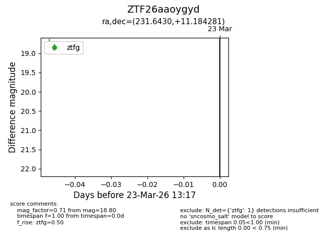
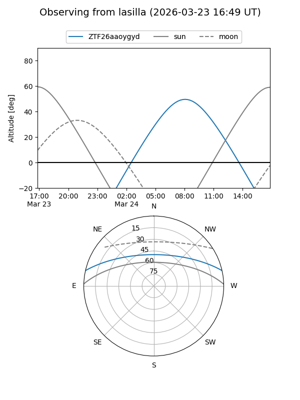
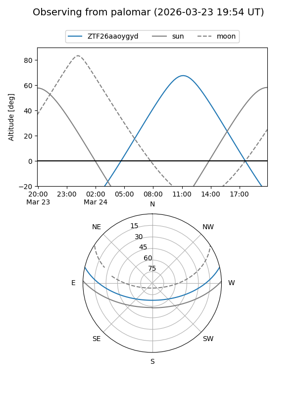

ZTF26aaoygyd
Target ZTF26aaoygyd at 2026-03-23 13:19
Aliases and brokers:
FINK: link
Lasair: link
ALeRCE: link
alt names
ZTF26aaoygyd (ztf,fink_ztf)
Coordinates:
equatorial (ra, dec) = 231.6430,+11.18428
equatorial (HMS+DMS) = 15:26:34.33,+11:11:03.41
galactic (l, b) = (16.9431,+50.26695)
Flags:
Photometry:
last ztfg=18.80
1 ztfg detections
Lightcurve

Visibility


Additional plots